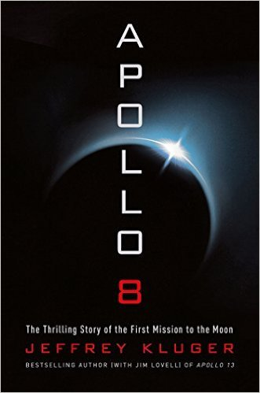

Apollo 8: The Thrilling Story of the First Mission to the Moon
- Read on 2018-04-20
- Rating: ️️️️️
- Format: 🎧 (11 hours 8 minutes)
The story of NASA's first mission to orbit the moon. There were many familiar aspects of the story, and I admire the tenacity of those involved. So much of the early space program was insanely bold (emphasis on insane). I think it would have been truly exciting to live in these days, caught in the fervor of the space race. Additionally, I'd like to think I would have similarly been caught up in the excitement of aviation and the space race had I been alive during this time. As an added bonus, if you listen to the book, at the end are numerous audio clips of the astronauts - scenes which you just heard described and fully explained. It helped make the story much more real.
- Prior: Ready Player One
- Next: Grant